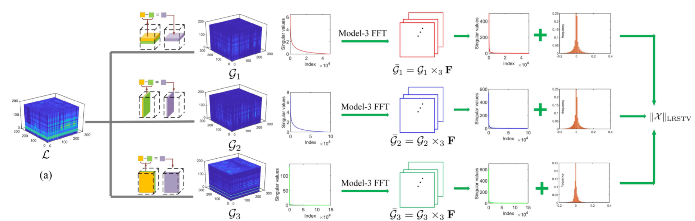

Bio
I am a PhD candidate at Ghent University, under
Prof. Wilfried Philips and Prof. Hiep Luong. Prior to this, I received my Master's degree in Applied Mathematics from Northwest A&F University.
My primary areas of interest in research are computational imaging, tensor completion, hyperspectral imaging, and mobile intelligent photography and imaging.
My goal is to develop improved imaging techniques, pushing the boundaries of machine vision. My work has been recognized through publications in leading conferences and journals, including CVPR, ECCV, IJCV, NeurIPS, and IEEE TIP, TNNLS, TMM, TGRS, TCI.
News
- [2024.09] One paper was accepted by NeurIPS 2024!
- [2024.07] Two papers were accepted by ECCV 2024!
- [2024.04] One paper was accepted by IJCV!
- [2024.03] 3rd place in CVPR 2024 MIPI challenge CVPR 2024
- [2024.02] Four papers were accepted by CVPR 2024!
- [2024.02] One paper was accepted by IEEE TIP!
- [2023.11] I have been honored as the recipient of 2023 imec PhD Excellence Award!
- [2023.04] One paper was accepted by IEEE TNNLS
- [2022.10] 3rd place in ECCV 2022 MIPI challenge ECCV 2022
- [2022.09] One paper was accepted by IEEE TMM
Research Topic
I work in the field of computational imaging, and tensor theory. Currently, I specifically focus on the following research topics:
- Image Signal Processor (AI + ISP): Mobile Camera, Spectral Camera
- Computational Imaging: MSFA/Snapshot Spectral Imaging, MRI, Bayer and Non-Bayer Imaging
- Tensor Theory: Low-Rank Tensor Representation, Convex and Non-convex Optimization
Publication
MambaSCI: Efficient Mamba-UNet for Quad-Bayer Patterned Video Snapshot Compressive Imaging
Z. Pan*, H. Zeng*(✉) and K. Zhang et al., [paper] [code] (*Equal Contribution)
Annual Conference on Neural Information Processing Systems (NeurIPS)
Wavelength-Embedding-guided Filter-Array Transformer for Spectral Demosaicing
H. Zeng, H. Luong and W. Philips, [paper]
European Conference on Computer Vision (ECCV)
SAH-SCI: Self-Supervised Adapter for Efficient Hyperspectral Snapshot Compressive Imaging
H. Zeng*, Y. Liu* and J. Su et al., [paper] [code] (*Equal Contribution)
European Conference on Computer Vision (ECCV)
DiffSCI: Zero-Shot Snapshot Compressive Imaging via Iterative Spectral Diffusion Model
Z. Pan*, H. Zeng* and K. Zhang et al., [paper] [code] (*Equal Contribution)
IEEE Conference on Computer Vision and Pattern Recognition (CVPR)
Unmixing Diffusion for Self-Supervised Hyperspectral Image Denoising
H. Zeng, J. Cao, and Wilfried Philips et al., [paper] [code]
IEEE Conference on Computer Vision and Pattern Recognition (CVPR)
Dual Prior Unfolding for Snapshot Compressive Imaging
J. Zhang*, H. Zeng* and J. Cao et al., [paper] [code] (*Equal Contribution)
IEEE Conference on Computer Vision and Pattern Recognition (CVPR)
Improving Spectral Snapshot Reconstruction with Spectral-Spatial Rectification
J. Zhang, H. Zeng and J. Cao et al., [paper] [code]
IEEE Conference on Computer Vision and Pattern Recognition (CVPR)
Inheriting Bayer's Legacy: Joint Remosaicing and Denoising for Quad Bayer Image Sensor
H. Zeng*, K. Feng*, and Wilfried Philips et al., [paper] (*Equal Contribution)
International Journal of Computer Vision (IJCV)
Unsupervised Spectral Demosaicing with Lightweight Spectral Attention Networks
K. Feng*, H. Zeng* and Y. Zhao et al., [paper] [code] (*Equal Contribution)
IEEE Transactions on Image Processing
Tensor Completion using Bilayer Multi-mode Low-rank Prior and Total Variation
H. Zeng, S. Huang, Y. Chen et al., [paper]
IEEE Transactions on Neural Networks and Learning Systems
Multi-mode Core Tensor Factorization based Low-Rankness and Its Applications to Tensor Completion
H. Zeng, Jize Xue et al., [paper]
IEEE Transactions on Multimedia
Hyperspectral Image Restoration via Global $L_{1−2}$ Spatial-Spectral Total Variation Regularized Local Low-Rank Tensor Recovery
H. Zeng, Jifeng Ning et al., [paper]
IEEE Transactions on Geoscience and Remote Sensing
Enhanced nonconvex low-rank approximation of tensor multi-modes for tensor completion
H. Zeng, Yongyong Chen et al., [paper] [code]
IEEE Transactions on Computational Imaging
Hyperspectral Image Denoising via Global Spatial-Spectral Total Variation Regularized Nonconvex Local Low-Rank Tensor Approximation
H. Zeng, Jifeng Ning et al., [paper]
Signal Processing

All of Low-rank and Sparse: A Recast Total Variation Approach to Hyperspectral Denoising
H. Zeng, and Wilfried Philips et al., [paper]
IEEE Journal of Selected Topics in Applied Earth Observations and Remote Sensing
Hyperspectral Image Restoration via CNN Denoiser Prior Regularized Low-rank Tensor Recovery
H. Zeng, Jifeng Ning et al., [paper] [code]
Computer Vision and Image Understanding
Membership
Fundings
- BOF Special Research Fund, 2021-2025
Journal Reviewer
- IEEE Transactions on Image Processing (TIP)
- IEEE Transactions on Neural Networks and Learning Systems (TNNLS)
- IEEE Transactions on Geoscience and Remote Sensing (TGRS)
- IEEE Journal of Selected Topics in Applied Earth Observations and Remote Sensing (JSTARS)
- IEEE Geoscience and Remote Sensing Letters (GRSL)
- IEEE Access
- International Journal of Machine Learning and Cybernetics
- Neurocomputing
- Scientific Reports
- Signal, Image and Video Processing
Conference Reviewer
- International Conference on Learning Representations (ICLR)
- IEEE Conference on Computer Vision and Pattern Recognition (CVPR)
- European Conference on Computer Vision (ECCV)
- Conference on Neural Information Processing Systems (NeurIPS)
- International Conference on Artificial Intelligence and Statistics (AISTATS)
- AAAI Conference on Artificial Intelligence (AAAI)
- ACM Multimedia (ACM MM)
- IEEE Conference on Multimedia Expo (ICME)
Awards
- 2023 imec PhD Excellence Award, imec,
Two per year across all imec research institutes
- Third place in ECCV 2022 Mobile Intelligent Photography and Imaging (MIPI) challenge, ECCV
- Top-Ten Distinguished Graduate Student , 10 / 2400+, Northwest A&F University
- Outstanding Graduate Student, Shaanxi Province
- Outstanding Graduates Award, Top 10%, Northwest A&F University
- National Scholarship, < 2%, Ministry of Education
- Best Master's Thesis Award, Northwest A&F University
- National second prize, of "National Post-Graduate Mathematical Contest in Modeling (GMCM)"
- National third prize, of "National Post-Graduate Mathematical Contest in Modeling (GMCM)"
- First prize (mathematics category) of 2017 "Chinese Mathematics Competitions (CMC)"
More about Me
I'm a badminton enthusiast, and I also find joy in middle to long-distance running.